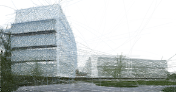

Recent News
- April 2017 I have accepted a faculty position in the Columbia Psychology Department, starting July 2018.
- October 2016 My first manuscript describing the research I've been conducting at the Princeton Neuroscience Institute, Discovering event structure in continuous narrative perception and memory, has been posted as a preprint on bioRxiv.
- September 2016 My paper Two distinct scene processing networks connecting vision and memory, has been published in eNeuro.
- June 2016 My final PhD manuscript, Two distinct scene processing networks connecting vision and memory, has been posted as a preprint on bioRxiv.
- May 2016 My new paper, Pinpointing the peripheral bias in neural scene-processing networks during natural viewing, has been published in the Journal of Vision.
- April 2016 My new paper, Human–Object Interactions Are More than the Sum of Their Parts, has been published in Cerebral Cortex.
About Me
I study how the human brain is able to perceive and remember our complex real-world experiences. How can we so quickly understand high-level properties of our environment, such as where we are and which actions we can take next? How do we break up our lives into events that we can understand and later recall as stories? Functional MRI, along with new analysis tools, have started to give us insight into the structure of the brain networks underlying these processes.
I am currently a postdoctoral associate at the Princeton Neuroscience Institute, working with
Uri Hasson and
Ken Norman. I completed my PhD in Computer Science at Stanford in 2015 (advised by
Fei-Fei Li and co-advised by
Diane Beck). As an undergraduate I majored in Electrical Engineering at Princeton, with certificates in Physics, and Robotics and Intelligent Systems.
I've had summer jobs as a software developer and research intern at a number of companies, including Google,
American College of Radiology Imaging Network (ACRIN), and
Kulicke & Soffa.
Starting July 2018, I will be joining the Columbia Psychology department as an assistant professor. The website for the Dynamic Perception and Memory Lab is
now online!
Full CV [pdf]

Princeton Neuroscience Institute, Rm 244B
Washington Road
Princeton NJ, 08544
My Family
My wife Linda and I began dating in high school in 2004, and were married in 2010. Our children Will and Andrew were born in 2012 and 2016. We all enjoy spicy food, dancing, fancy cheese, Disney movies, and bike riding.
Other Interests